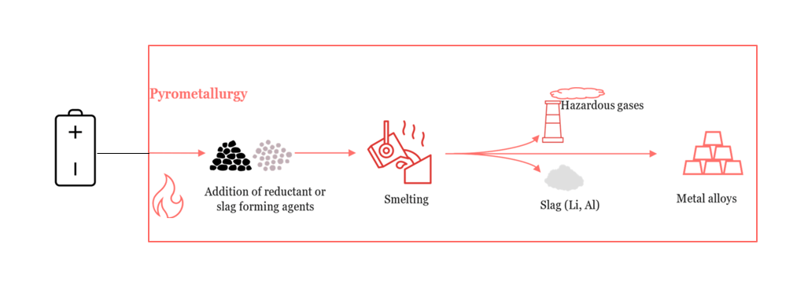

Click to enlarge
Battery recycling is essential for resource conservation and environmental protection. Among various recycling techniques, pyrometallurgy stands out for its ability to treat complex and contaminated waste streams. Traditionally dominant in the recycling of LABs, pyrometallurgical methods are now being explored for Ni-MH and Li-ion batteries due to increasing volumes of end-of-life batteries and the high value of metals like cobalt, nickel, and lithium.
Process Steps
Pyrometallurgy involves the use of high temperatures (typically 1000–1600°C) to decompose battery materials, recover valuable metals, and separate impurities. The general process includes the following steps:
- Pre-treatment: are discharged to avoid short-circuiting and fire hazards. Components are dismantled manually or mechanically. Electrolytes are removed via neutralization or evaporation. For Li-ion and Ni-MH, thermal pre-treatment is often used to remove binders and organics.
- Smelting or Reduction: Processed battery materials are fed into a high-temperature furnace such as a blast furnace, rotary kiln, or electric arc furnace. Reductants like carbon or coke convert metal oxides to their elemental forms. Fluxes such as silica, soda ash, and lime are added to form slag and promote metal separation.
- Phase Separation: The furnace separates the molten content into distinct phases:
- Metal Phase: Contains valuable metals (e.g., Pb, Ni, Co).
- Slag Phase: Contains less recoverable materials like Li, Al, Mn, and REEs.
- Gas Phase: Includes volatile organics and oxides (e.g., CO₂, SO₂).
- Refining:The recovered metal alloys undergo refining to improve purity. Lead alloys are desulfurized and demetallized. Ni-Co alloys may undergo hydrometallurgical post-treatment for separation.
- Gas Handling:Emissions are treated with filters, scrubbers, or baghouses to capture particulates and acid gases. Waste heat recovery systems are used to improve energy efficiency.
Applications
- Lead-Acid Batteries (LABs): LAB recycling involves smelting lead compounds (PbSO₄, PbO, PbO₂) at ~1000–1200°C. Soda ash acts as a flux and reductant. Iron or coke is added to assist reduction. The process efficiently recovers lead with yields over 95%, but generates SO₂, necessitating flue gas desulfurization. Slag from LABs typically contains minimal reusable metal.
- Nickel-Metal Hydride (Ni-MH) Batteries: Ni-MH batteries are shredded and subjected to controlled thermal decomposition to reduce complex hydrides and organics. Smelting recovers Ni and Co in alloy form, while REEs like La, Ce, and Nd migrate to the slag. Aryani et al. (2024) demonstrated that using waste glass as a flux enhances slag fluidity and promotes better metal-slag separation. Pyrometallurgical efficiency can exceed 80% for Ni and Co.
- Lithium-Ion Batteries (Li-ion): Li-ion batteries are complex and contain valuable metals like Co, Ni, Mn, and less recoverable elements like Li and Al. High-temperature arc smelting focuses on Co and Ni recovery, forming metal-rich alloys. Lithium migrates to the slag, requiring subsequent hydrometallurgical leaching. Advanced processes, such as reductive atmosphere control and flux engineering, improve yield but are energy-intensive. Integration with slag leaching is often necessary to recover Li and Mn.
Environmental Aspects
- Process Efficiency and Recovery Pyrometallurgy ensures high recovery rates for Pb, Ni, and Co (85–98%) but struggles with Li and REEs due to their affinity for slag. Reaction kinetics depend on furnace temperature, reductant reactivity, and residence time. Optimization of slag composition and furnace atmosphere is crucial for maximizing metal separation.
- Environmental Impacts Environmental concerns include CO₂ and SO₂ emissions, toxic dioxins from organics, and heavy metal vapors. Gas scrubbing, activated carbon filters, and condensation systems are employed to mitigate emissions. Pyrometallurgical processes are energy-intensive; however, coupling with energy recovery (e.g., waste heat boilers) can reduce the net environmental footprint.